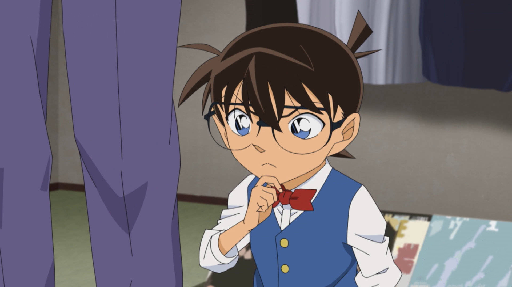

剧情简介
全日本最有钱的大富豪乌丸莲耶，创建了神秘的犯罪集团组织，花费大量资金建实验室，寻找大量科学家来给他开发可以永生的长生不死药物。现在已靠研发的药物活到了140岁。该犯罪组织在世界各国进行犯罪活动，引起了各国情报局的注意和调查。包括美国FBI联邦调查局 CIA中央情报局 英国MI6 日本国安局等。
 后来，这个大富豪假死隐退。除他之外，全日本最有钱的势力为东京的铃木集团，以及关西地区的大冈家。还有羽田家也很有钱，羽田家和大冈家关系比较好，大冈家和铃木集团的顾问铃木次郎吉的关系不太好。而羽田家家主羽田康晴和英国一个MI6军情六处的特工赤井务武认识，赤井务武的妻子叫世良玛丽。世良玛丽的妹妹和妹夫，叫爱莲娜和宫野厚司在日本居住开诊所生活，是科学家和药物学家医生。
后来，这个大富豪假死隐退。除他之外，全日本最有钱的势力为东京的铃木集团，以及关西地区的大冈家。还有羽田家也很有钱，羽田家和大冈家关系比较好，大冈家和铃木集团的顾问铃木次郎吉的关系不太好。而羽田家家主羽田康晴和英国一个MI6军情六处的特工赤井务武认识，赤井务武的妻子叫世良玛丽。世良玛丽的妹妹和妹夫，叫爱莲娜和宫野厚司在日本居住开诊所生活，是科学家和药物学家医生。
 当年，一个叫降谷零的金发混血小男孩经常因为种族被嘲笑和别人打架，拜访宫野夫妇开的医院，爱莲娜成了她初恋。乌丸莲耶因为看上了宫野厚司的研究，所以在20-19年前邀请宫野厚司和爱莲娜加入了组织开发药物，带着他们的女儿明美和还没出生的志保，告别了这个小男孩降谷零。
当年，一个叫降谷零的金发混血小男孩经常因为种族被嘲笑和别人打架，拜访宫野夫妇开的医院，爱莲娜成了她初恋。乌丸莲耶因为看上了宫野厚司的研究，所以在20-19年前邀请宫野厚司和爱莲娜加入了组织开发药物，带着他们的女儿明美和还没出生的志保，告别了这个小男孩降谷零。
 黑衣犯罪组织的金色长发的美国女干部，代号贝尔摩德，因为吃了组织研发的药物导致皮肤长生不老，并化名莎郎·温亚德当了美国电影女明星。拜师日本著名魔术师黑羽盗一学了易容术和变声术，可以变装成别人的样子进行犯罪。并因此认识了同样来拜师的日本著名女演员藤峰有希子，两人成为了朋友。
黑衣犯罪组织的金色长发的美国女干部，代号贝尔摩德，因为吃了组织研发的药物导致皮肤长生不老，并化名莎郎·温亚德当了美国电影女明星。拜师日本著名魔术师黑羽盗一学了易容术和变声术，可以变装成别人的样子进行犯罪。并因此认识了同样来拜师的日本著名女演员藤峰有希子，两人成为了朋友。
 20年前，贝尔摩德易容成FBI探员，暗杀了斯特林探员，这就是后来他女儿茱蒂加入了FBI联邦调查局为他报仇的原因。因为能变成别人样子，贝尔摩德也被称为千面魔女。而日本的大富豪羽田康晴他的将棋手儿子羽田浩司，在17年前前往了美国参加比赛，在酒店和美国资本家阿曼达见面时被这个黑衣组织二把手朗姆酒暗杀了，羽田浩司留下了组织BOSS的名字乌丸莲耶当作暗号。当时因为警察一直破不了案件，羽田康晴就委托Mi6的朋友赤井务武前往美国调查此案，然后赤井务武就遭到了暗杀失踪了。一家人逃到了日本避难，羽田康晴也因此感到愧疚收养了赤井务武的家人，把赤井务武小儿子秀吉收为义子，让他代替羽田浩司当羽田家的将棋手，大儿子赤井秀一则为了找出父亲下落去了美国留学打算加入FBI联邦调查局进行调查。
20年前，贝尔摩德易容成FBI探员，暗杀了斯特林探员，这就是后来他女儿茱蒂加入了FBI联邦调查局为他报仇的原因。因为能变成别人样子，贝尔摩德也被称为千面魔女。而日本的大富豪羽田康晴他的将棋手儿子羽田浩司，在17年前前往了美国参加比赛，在酒店和美国资本家阿曼达见面时被这个黑衣组织二把手朗姆酒暗杀了，羽田浩司留下了组织BOSS的名字乌丸莲耶当作暗号。当时因为警察一直破不了案件，羽田康晴就委托Mi6的朋友赤井务武前往美国调查此案，然后赤井务武就遭到了暗杀失踪了。一家人逃到了日本避难，羽田康晴也因此感到愧疚收养了赤井务武的家人，把赤井务武小儿子秀吉收为义子，让他代替羽田浩司当羽田家的将棋手，大儿子赤井秀一则为了找出父亲下落去了美国留学打算加入FBI联邦调查局进行调查。
 然后他们家的亲戚正好就是组织中的科学家爱莲娜和宫野厚司，好像被组织暗杀了，只留下了两个不知情的女儿志保和明美在组织，因为志保智商高未懂事就被组织送到了美国留学培养。同样是这一年，日本著名女演员藤峰有希子嫁给了著名小说家工藤优作，在日本定居，生下来了儿子工藤新一。而有希子的高中同学，一个叫毛利小五郎一个叫妃英理，考上了米花大学和东都大学，两个人没毕业就结婚了生了个女儿叫小兰。
然后他们家的亲戚正好就是组织中的科学家爱莲娜和宫野厚司，好像被组织暗杀了，只留下了两个不知情的女儿志保和明美在组织，因为志保智商高未懂事就被组织送到了美国留学培养。同样是这一年，日本著名女演员藤峰有希子嫁给了著名小说家工藤优作，在日本定居，生下来了儿子工藤新一。而有希子的高中同学，一个叫毛利小五郎一个叫妃英理，考上了米花大学和东都大学，两个人没毕业就结婚了生了个女儿叫小兰。
 然后这个毛利小五郎大学毕业就加入了警察学校学习，认识了教官鬼冢教官，在射击训练时完成过20个子弹全部命中靶心，是个超级射击天才。毕业后就加入了搜查一课，在警局里他也是枪法数一数二准的警官。他女儿小兰也在幼儿园和有希子的儿子工藤新一成为了青梅竹马，后来一直在小学 初中 高中都是一个学校一起长大的。
然后这个毛利小五郎大学毕业就加入了警察学校学习，认识了教官鬼冢教官，在射击训练时完成过20个子弹全部命中靶心，是个超级射击天才。毕业后就加入了搜查一课，在警局里他也是枪法数一数二准的警官。他女儿小兰也在幼儿园和有希子的儿子工藤新一成为了青梅竹马，后来一直在小学 初中 高中都是一个学校一起长大的。
 10年前的时候赤井秀一在美国毕业了，拿到了美国国籍就打算三年后加入FBI联邦调查局，回到日本在海水浴场和家人们见面，这时候秀吉已经是一个将棋手了，妹妹真纯也已经7岁了。因为真纯多年没见自己在外留学多年的大哥秀一，想逗笑他但都没有成功。然后他们一家就偶遇了工藤新一和小兰还有有希子，工藤新一用幼稚的推理推理秀一是马戏团小丑，把他逗得哈哈大笑。这也就让真纯认为工藤新一是个能让秀哥笑出来的魔法师。因为工藤新一喜欢福尔摩斯这部小说，对他们自称是福尔摩斯的弟子。
10年前的时候赤井秀一在美国毕业了，拿到了美国国籍就打算三年后加入FBI联邦调查局，回到日本在海水浴场和家人们见面，这时候秀吉已经是一个将棋手了，妹妹真纯也已经7岁了。因为真纯多年没见自己在外留学多年的大哥秀一，想逗笑他但都没有成功。然后他们一家就偶遇了工藤新一和小兰还有有希子，工藤新一用幼稚的推理推理秀一是马戏团小丑，把他逗得哈哈大笑。这也就让真纯认为工藤新一是个能让秀哥笑出来的魔法师。因为工藤新一喜欢福尔摩斯这部小说，对他们自称是福尔摩斯的弟子。
 然后，小兰的父亲因为案件，就和他妈分居了，辞掉了警察，开了侦探所当侦探。
然后，小兰的父亲因为案件，就和他妈分居了，辞掉了警察，开了侦探所当侦探。
 而那个莎朗温亚德，因为不再变老后，又伪造了一个莎郎的女儿克丽丝温亚德的身份，因为易容术还可以易容成莎郎，一人分饰两角。7年前，赤井秀一也就加入了FBI，和同样成为FBI的茱蒂在一起了。之后又去了黑衣组织卧底，认识了明美，和她在一起和茱蒂分手了，后来暴露了卧底身份，导致明美被杀。
而那个莎朗温亚德，因为不再变老后，又伪造了一个莎郎的女儿克丽丝温亚德的身份，因为易容术还可以易容成莎郎，一人分饰两角。7年前，赤井秀一也就加入了FBI，和同样成为FBI的茱蒂在一起了。之后又去了黑衣组织卧底，认识了明美，和她在一起和茱蒂分手了，后来暴露了卧底身份，导致明美被杀。
 而当年经常拜访爱莲娜诊所那个金发小男孩降谷零，则为了寻找突然搬走的初恋女医生爱莲娜，和好友诸伏景光加入了警察学校。成了毛利小五郎晚辈，也在这听说了毛利小五郎完成20颗子弹命中靶心的传说。认识了松田阵平 萩原研二 伊达航。人称警校五人组。
而当年经常拜访爱莲娜诊所那个金发小男孩降谷零，则为了寻找突然搬走的初恋女医生爱莲娜，和好友诸伏景光加入了警察学校。成了毛利小五郎晚辈，也在这听说了毛利小五郎完成20颗子弹命中靶心的传说。认识了松田阵平 萩原研二 伊达航。人称警校五人组。
 毕业后，降谷零和景光就当了公安警察，也去了这个组织卧底，组织代号叫波本，因为能力很强获得了组织信任，认识了女干部贝尔摩德知道她是女演员克丽丝会易容。景光之后卧底身份暴露了，在同样是卧底的FBI探员赤井秀一面前自杀了，所以降谷零对赤井秀一非常憎恨。松田阵平萩原研二加入了爆炸物处理班，在爆炸案中殉职了。伊达航加入了搜查一课，和高木关系很好，之后出了车祸殉职了。
毕业后，降谷零和景光就当了公安警察，也去了这个组织卧底，组织代号叫波本，因为能力很强获得了组织信任，认识了女干部贝尔摩德知道她是女演员克丽丝会易容。景光之后卧底身份暴露了，在同样是卧底的FBI探员赤井秀一面前自杀了，所以降谷零对赤井秀一非常憎恨。松田阵平萩原研二加入了爆炸物处理班，在爆炸案中殉职了。伊达航加入了搜查一课，和高木关系很好，之后出了车祸殉职了。
 一年前，有希子带着上了高中的新一小兰到纽约看舞台戏，新一小兰因此认识了女明星莎郎（贝尔摩德易容），还知道了有希子和莎郎都会易容。然后莎郎易容成一个杀人犯时被小兰撞见，准备杀她时却不小心掉下了楼梯，被小兰和工藤新一伸出手救了她，所以之后莎郎觉得她是自己的天使，不会杀小兰。
一年前，有希子带着上了高中的新一小兰到纽约看舞台戏，新一小兰因此认识了女明星莎郎（贝尔摩德易容），还知道了有希子和莎郎都会易容。然后莎郎易容成一个杀人犯时被小兰撞见，准备杀她时却不小心掉下了楼梯，被小兰和工藤新一伸出手救了她，所以之后莎郎觉得她是自己的天使，不会杀小兰。
 然后贝尔摩德就伪造了莎郎身份的葬礼，以克丽丝温亚德的身份，并说出来了一句口头禅，因为当年杀茱蒂父亲时也说过这一句话，茱蒂怀疑克丽丝就是她的杀父仇人，调查之后确认了克丽丝就是她杀父仇人，还发现了克丽丝和莎郎是同一个人。然后茱蒂等FBI就开始追捕克丽丝温亚德了。
然后贝尔摩德就伪造了莎郎身份的葬礼，以克丽丝温亚德的身份，并说出来了一句口头禅，因为当年杀茱蒂父亲时也说过这一句话，茱蒂怀疑克丽丝就是她的杀父仇人，调查之后确认了克丽丝就是她杀父仇人，还发现了克丽丝和莎郎是同一个人。然后茱蒂等FBI就开始追捕克丽丝温亚德了。
 今年，这个工藤新一就成了日本著名的高中生侦探，帮日本警方破了很多案件。一次在游乐园和小兰约会，偷窥了组织成员伏特加的交易，被另一个成员伏特加的大哥琴酒背后打晕罐下了一种叫APTX4869的药物暗杀他，结果他意外没死被这个药药效把身体变小了。之后变小的工藤新一就化名柯南住到了小兰家里，用博士发明的道具伪装小五郎破案让他出名了
今年，这个工藤新一就成了日本著名的高中生侦探，帮日本警方破了很多案件。一次在游乐园和小兰约会，偷窥了组织成员伏特加的交易，被另一个成员伏特加的大哥琴酒背后打晕罐下了一种叫APTX4869的药物暗杀他，结果他意外没死被这个药药效把身体变小了。之后变小的工藤新一就化名柯南住到了小兰家里，用博士发明的道具伪装小五郎破案让他出名了

 这个药就是宫野夫妇二女儿宫野志保开发的，叫APTX4869，现在也是个组织的科学家了，代号雪莉。然后她就带人两次调查工藤新一家，发现他小时候衣服没了，就知道他变小了，隐瞒了组织，把服药名单中工藤新一名字改成了已确认死亡。然后因为她姐姐明美谈了个FBI的叛徒的男朋友赤井秀一，被杀了，她反抗组织就吃药自杀结果意外变小逃离了组织，找到了工藤新一家，和他会和了，以新的名字灰原哀和工藤新一一起重新上小学一年级。给他开发恢复身体的解药，目前已经开发出来了半成品。
这个药就是宫野夫妇二女儿宫野志保开发的，叫APTX4869，现在也是个组织的科学家了，代号雪莉。然后她就带人两次调查工藤新一家，发现他小时候衣服没了，就知道他变小了，隐瞒了组织，把服药名单中工藤新一名字改成了已确认死亡。然后因为她姐姐明美谈了个FBI的叛徒的男朋友赤井秀一，被杀了，她反抗组织就吃药自杀结果意外变小逃离了组织，找到了工藤新一家，和他会和了，以新的名字灰原哀和工藤新一一起重新上小学一年级。给他开发恢复身体的解药，目前已经开发出来了半成品。
 之后，莎郎温亚德（贝尔摩德)就发现了救命恩人工藤新一名字在组织的服药名单，就来到日本调查，FBI也跟着她来到了日本。最后，她安装窃听器知道了灰原就是背叛组织的科学家雪莉，柯南就是工藤新一，两人服下药物后变小了。在追杀雪莉（灰原）时，被FBI茱蒂还有赤井秀一救了。然后，贝尔摩德似乎因为救命之恩隐瞒了工藤新一和雪莉因服药被药效变小成小孩子的事情。
之后，莎郎温亚德（贝尔摩德)就发现了救命恩人工藤新一名字在组织的服药名单，就来到日本调查，FBI也跟着她来到了日本。最后，她安装窃听器知道了灰原就是背叛组织的科学家雪莉，柯南就是工藤新一，两人服下药物后变小了。在追杀雪莉（灰原）时，被FBI茱蒂还有赤井秀一救了。然后，贝尔摩德似乎因为救命之恩隐瞒了工藤新一和雪莉因服药被药效变小成小孩子的事情。
 然后就是FBI查到了经常和贝尔摩德来往的电视台女主播水无怜奈是组织成员，柯南在她鞋底安装了窃听器，知道了组织在暗杀议员土门康辉。FBI和柯南在阻止他们过程中他们的水无怜奈出了车祸，被FBI保护了起来转移到了医院。FBI最后知道了她是美国CIA的卧底。琴酒派出了楠田陆道潜伏医院寻找水无怜奈，最后被FBI发现自杀了，琴酒确认了水无怜奈所在医院的位置。最后成功救走了水无怜奈，但这都是工藤新一和赤井秀一的计划，让她回到组织继续卧底。然后赤井秀一和水无怜奈单独见面，假装被水无怜奈杀死，让水无怜奈获得了组织信任。然后赤井秀一就假死易容成冲矢昴了。
然后就是FBI查到了经常和贝尔摩德来往的电视台女主播水无怜奈是组织成员，柯南在她鞋底安装了窃听器，知道了组织在暗杀议员土门康辉。FBI和柯南在阻止他们过程中他们的水无怜奈出了车祸，被FBI保护了起来转移到了医院。FBI最后知道了她是美国CIA的卧底。琴酒派出了楠田陆道潜伏医院寻找水无怜奈，最后被FBI发现自杀了，琴酒确认了水无怜奈所在医院的位置。最后成功救走了水无怜奈，但这都是工藤新一和赤井秀一的计划，让她回到组织继续卧底。然后赤井秀一和水无怜奈单独见面，假装被水无怜奈杀死，让水无怜奈获得了组织信任。然后赤井秀一就假死易容成冲矢昴了。
 然后赤井秀一他妈和他妹因为MI6发现了赤井务武踪迹，就回到了英国伦敦居住，然后结果发现这个赤井务武是贝尔摩德易容的，玛丽也被贝尔摩德用嘴喂了药暗杀，结果玛丽也变小了。当时工藤新一和小兰 小五郎他们偶遇了来到日本度假的英国皇室的一个女的，帮了她的忙，她就邀请了毛利小五郎一行人来到了伦敦。在伦敦看温布尔网球赛时，网球女王米涅芭就卷入了爆炸案，柯南帮他破案时在观众台大喊我是福尔摩斯的弟子，我可以帮你草地女王。这一幕上了电视。变小的玛丽和世良真纯看到了这一幕柯南说的话，认出来了这是他们十年前在海滩边认识的那个男孩工藤新一，然后玛丽让MI6查出来飞机确实有工藤新一的名字，知道了工藤新一也变小了。然后玛丽就带着世良真纯来到日本，让世良真纯转学他们班上调查。玛丽和世良真纯在羽田康晴的资金提供下住到了酒店，羽田秀吉知道秀一没死但为了FBI的利益隐瞒了他没死，所以玛丽和世良真纯都以为赤井秀一在FBI殉职了。
然后赤井秀一他妈和他妹因为MI6发现了赤井务武踪迹，就回到了英国伦敦居住，然后结果发现这个赤井务武是贝尔摩德易容的，玛丽也被贝尔摩德用嘴喂了药暗杀，结果玛丽也变小了。当时工藤新一和小兰 小五郎他们偶遇了来到日本度假的英国皇室的一个女的，帮了她的忙，她就邀请了毛利小五郎一行人来到了伦敦。在伦敦看温布尔网球赛时，网球女王米涅芭就卷入了爆炸案，柯南帮他破案时在观众台大喊我是福尔摩斯的弟子，我可以帮你草地女王。这一幕上了电视。变小的玛丽和世良真纯看到了这一幕柯南说的话，认出来了这是他们十年前在海滩边认识的那个男孩工藤新一，然后玛丽让MI6查出来飞机确实有工藤新一的名字，知道了工藤新一也变小了。然后玛丽就带着世良真纯来到日本，让世良真纯转学他们班上调查。玛丽和世良真纯在羽田康晴的资金提供下住到了酒店，羽田秀吉知道秀一没死但为了FBI的利益隐瞒了他没死，所以玛丽和世良真纯都以为赤井秀一在FBI殉职了。 然后波本也不相信赤井秀一死了，就开始出动调查了，因为诸伏景光的事情一直很恨他。然后因为之前水无怜奈委托过名侦探毛利小五郎，身上又被安装了窃听器（其实是柯南安装的），所以琴酒就怀疑了小五郎在调查组织是他安装的窃听器。波本就拜了他为师，化名安室透进行调查，并在侦探所隔咖啡厅当了服务生。
然后波本也不相信赤井秀一死了，就开始出动调查了，因为诸伏景光的事情一直很恨他。然后因为之前水无怜奈委托过名侦探毛利小五郎，身上又被安装了窃听器（其实是柯南安装的），所以琴酒就怀疑了小五郎在调查组织是他安装的窃听器。波本就拜了他为师，化名安室透进行调查，并在侦探所隔咖啡厅当了服务生。 之后，波本查出来背叛组织的雪莉会搭乘特快列车，就和贝尔摩德在列车追捕灰原。有希子就和贝尔摩德在铃木号特快列车车厢见面，承认了自己就是莎郎，也是犯罪组织成员。波本在列车追捕背叛组织的雪莉，被柯南和秀一策划了假死。然后波本就查出来赤井秀一没死，赤井秀一也查出来波本其实是公安警察的卧底。然后，就是柯南一行人调查羽田浩司案，毛利小五郎因此又一次被琴酒和组织二把手朗姆酒盯上，因为羽田浩司就是朗姆杀的，朗姆就易容成一个厨师化名胁田兼则也拜了小五郎为师。柯南和赤井秀一工藤优作解开了羽田浩司暗号，知道了组织BOSS就是日本大富豪乌丸莲耶。然后柯南用解药半成品短暂恢复成工藤新一，参加休旅行和小兰确认关系开始交往。因为破案暴露上了热搜和新闻。因为他在服药名单，又和毛利一家有关系，所以朗姆酒就盯上了工藤新一，让波本搜集工藤新一信息给他，波本在偷偷潜入工藤新一家时被赤井秀一 工藤优作 有希子逮到进行了谈话来对付组织。
之后，波本查出来背叛组织的雪莉会搭乘特快列车，就和贝尔摩德在列车追捕灰原。有希子就和贝尔摩德在铃木号特快列车车厢见面，承认了自己就是莎郎，也是犯罪组织成员。波本在列车追捕背叛组织的雪莉，被柯南和秀一策划了假死。然后波本就查出来赤井秀一没死，赤井秀一也查出来波本其实是公安警察的卧底。然后，就是柯南一行人调查羽田浩司案，毛利小五郎因此又一次被琴酒和组织二把手朗姆酒盯上，因为羽田浩司就是朗姆杀的，朗姆就易容成一个厨师化名胁田兼则也拜了小五郎为师。柯南和赤井秀一工藤优作解开了羽田浩司暗号，知道了组织BOSS就是日本大富豪乌丸莲耶。然后柯南用解药半成品短暂恢复成工藤新一，参加休旅行和小兰确认关系开始交往。因为破案暴露上了热搜和新闻。因为他在服药名单，又和毛利一家有关系，所以朗姆酒就盯上了工藤新一，让波本搜集工藤新一信息给他，波本在偷偷潜入工藤新一家时被赤井秀一 工藤优作 有希子逮到进行了谈话来对付组织。
 之后，朗姆指挥琴酒追杀在日本调查他们的FBI搜查官，柯南和赤井秀一在海猿岛救下了卡迈尔探员。然后，因为服药名单只有玛丽一个人生死不明，组织BOSS乌丸莲耶亲自来调查确认玛丽服药后的状况，跟踪世良真纯到酒店后让手下破坏消防栓，引发警报把玛丽和世良真纯逼出了酒店，乌丸莲耶因此知道了玛丽身体变小了，APTX4069药物效果就是能让人身体变小。
之后，朗姆指挥琴酒追杀在日本调查他们的FBI搜查官，柯南和赤井秀一在海猿岛救下了卡迈尔探员。然后，因为服药名单只有玛丽一个人生死不明，组织BOSS乌丸莲耶亲自来调查确认玛丽服药后的状况，跟踪世良真纯到酒店后让手下破坏消防栓，引发警报把玛丽和世良真纯逼出了酒店，乌丸莲耶因此知道了玛丽身体变小了，APTX4069药物效果就是能让人身体变小。
 大概就是这样。目前状况就是工藤新一 有希子 工藤优作 赤井秀一知道了组织BOSS的身份，贝尔摩德知道工藤新一没死但是隐瞒组织，朗姆酒知道了工藤新一没有成功被组织杀死盯上了工藤一家和毛利一家，琴酒已经忘了工藤新一是谁。FBI和公安警察两方对抗组织的势力，和柯南站在了统一阵线，而MI6的玛丽还不信任柯南打算抢他的解药，组织BOSS已经知道了玛丽变小A药可以让人变小。
大概就是这样。目前状况就是工藤新一 有希子 工藤优作 赤井秀一知道了组织BOSS的身份，贝尔摩德知道工藤新一没死但是隐瞒组织，朗姆酒知道了工藤新一没有成功被组织杀死盯上了工藤一家和毛利一家，琴酒已经忘了工藤新一是谁。FBI和公安警察两方对抗组织的势力，和柯南站在了统一阵线，而MI6的玛丽还不信任柯南打算抢他的解药，组织BOSS已经知道了玛丽变小A药可以让人变小。